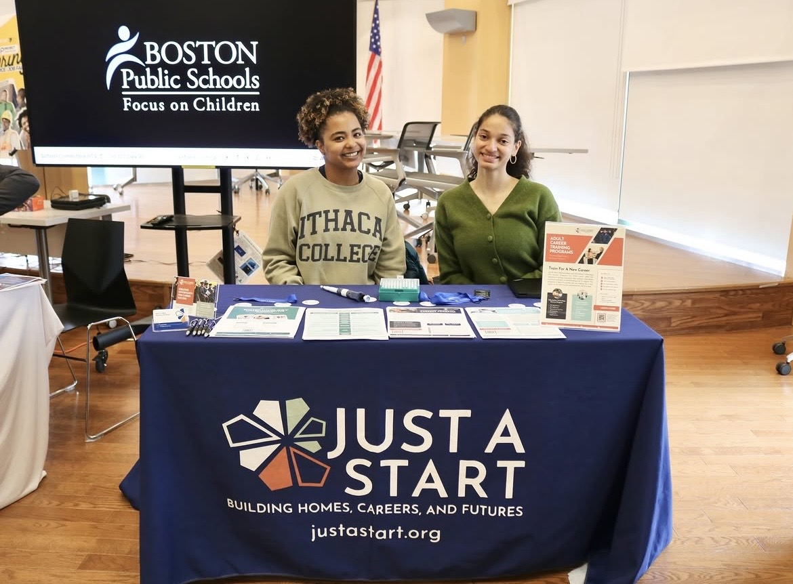

My Contributions
I've led 34 virtual information sessions and eight in-person information sessions since February. I started out by shadowing my manager, Ariagnna Abreu-Garcia, the Community Outreach and Recruitment Specialist, and eventually was presenting sessions on my own.
Information sessions take place virtually on Zoom every Tuesday and Thursday, and in-person sessions take place every couple of weeks. I've presented at the Codman Branch of the Boston Public Library, along with the Hyde Park Branch. I also led the open-house info-session in our building in April.
Tabling/Flyering
I've

Information Sessions
I've led 42 information sessions.

All applicants for the Adult Career Training Programs are required to take Accuplacer entrance exams. I received certification to proctor these exams, and for each session I set up the testing room with all the technology and materials applicants need to take their exams. I present the instructions and help participants get started. I support them along the way, and I help them interpret their scores at the end of their exams.
Entrance Exam Proctoring
I've proctored 24 testing sessions.

I also suggested to the team that we provide additional resources for applicants to adequately prepare for their exams.
I also analyzed the testing outcomes logged in Salesforce to identify correlation to cities our participants come from.
Entrance Exam Outcomes by City
These were from the exams I proctored.